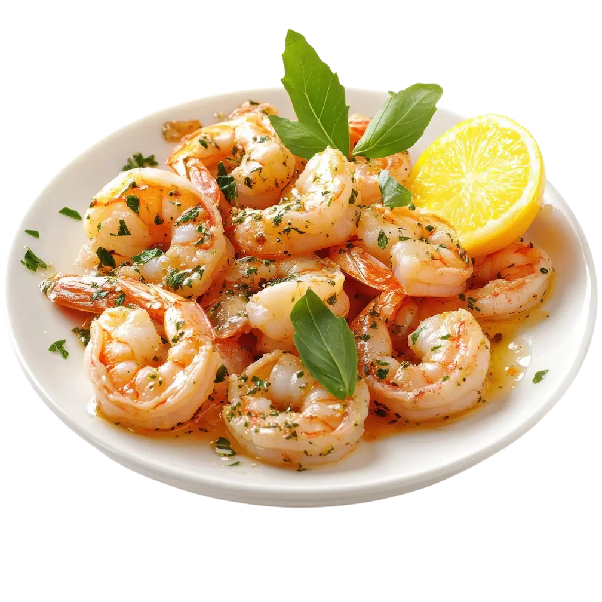

Camarones al Ajillo
Tiempo: 12 minutos · Dificultad: Fácil · Porciones: 2 porciones

Preparación
- Seca muy bien los camarones con papel absorbente y sazónalos con sal y pimienta.
- En una sartén grande a fuego medio, calienta el aceite de oliva junto con la mantequilla.
- Añade las láminas de ajo y las hojuelas de chile. Cocina por 1 a 2 minutos dorando levemente el ajo sin que se queme.
- Sube el fuego a medio-alto e incorpora los camarones en una sola capa.
- Saltea durante 2 minutos por lado hasta que cambien a un color rosado brillante.
- Vierte el vino blanco y el jugo de limón. Deja reducir el líquido hirviendo fuertemente durante 1 minuto.
- Espolvorea el perejil fresco picado, remueve rápidamente y retira del fuego de inmediato para evitar que los camarones se endurezcan.
¡Jugosos, aromáticos y perfectos para acompañar con pan tostado!
Tips de nuestra comunidad
Descubre recetas, combinaciones y secretos compartidos por otros amantes de la cocina. ¿Tienes un secreto de cocina?
Compártelo con la comunidad.
No sobrecocines los camarones; en cuanto tomen forma de "C" y se tornen rosados ya están perfectamente cocidos.
Sírvelos en una cazuela de barro bien caliente y acompaña siempre con gajos de limón extra al lado.